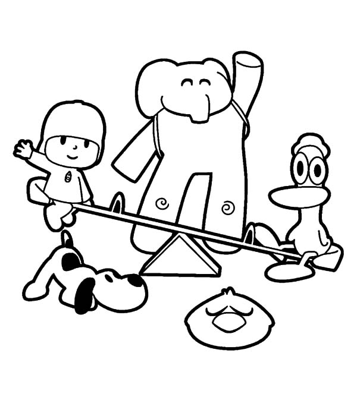

Conoce a Pocoyo
Aqui está Pocoyo junto a sus amigos.
Usuario: desconocido
Pocoyó es un un niño en edad de preescolar que está descubriendo el mundo e interactuando con él. Le acompañan sus amigos, Pato, Elly, Nina (a partir de la cuarta temporada), Pajaroto y su mascota Loula. Cada capítulo es introducido y conducido por una voz en off. En la versión original española pone su voz José María del Río, en la versión inglesa, el encargado de presentar a los personajes en las primeras 2 temporadas es Stephen Fry, a partir de la tercera temporada el encargado es Stephen Hughes y para la versión brasileña, Ricardo Fabio es el encargado. En la versión para Hispanoamérica, el encargado actualmente es Ángel Mujica, aunque existen otros doblajes anteriores para las primeras temporadas, Orlando Arenas (Colombia) y Adal Ramones (México).
Protagonistas
- Pocoyó: Es el protagonista y quien da nombre a la serie. Es un niño de 4 años de edad, con una curiosidad innata por el mundo que le rodea.
- Pato: Es un pato amarillo de 5 años de edad. Es el mejor amigo de Pocoyó y lleva siempre un sombrero verde.
- Elly: Es una elefante rosa de 5 años de edad, cuya personalidad afable contrasta con la de Pato. Elly es muy amiga de Pocoyó, y lo cuida como si fuera una hermana mayor.
- Nina: Es una niña muy simpática y cariñosa que siempre va acompañada de su amigo el robot Roberto. Nina viene de otro planeta, viste de verde, vive entre las plantas y es un personaje muy risueño que ama la naturaleza.
- El Narrador: Es quien presenta los títulos, hace preguntas a Pocoyo y amigos y ayuda a los personajes a comunicarse entre ellos. Habla durante todo el programa y, a menudo, se comunica directamente con los personajes.